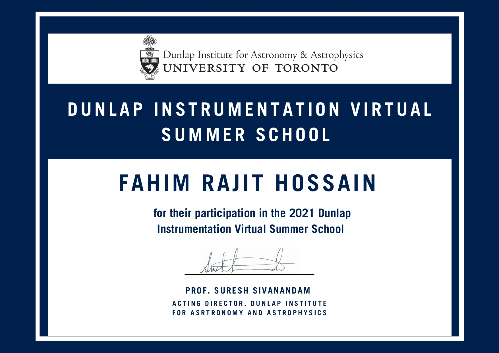
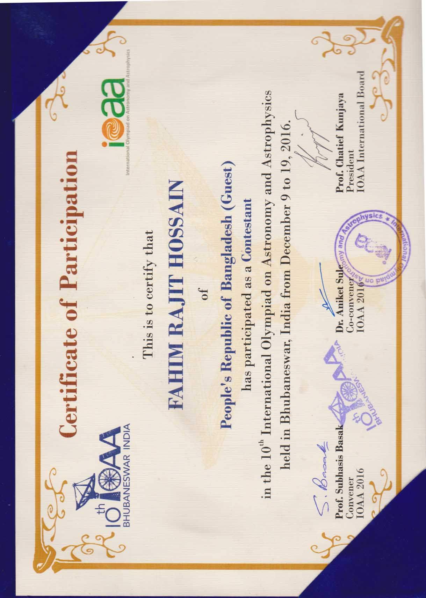
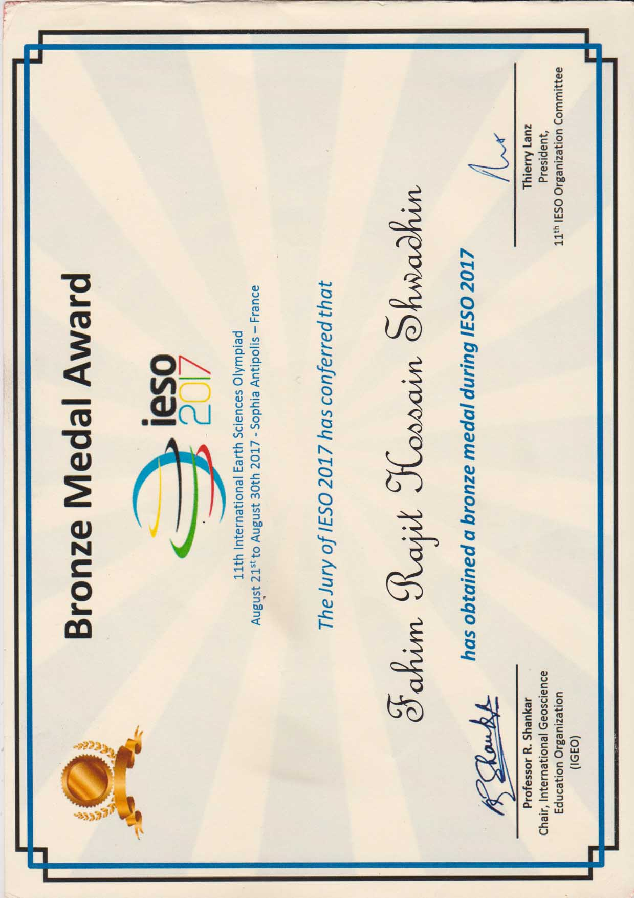
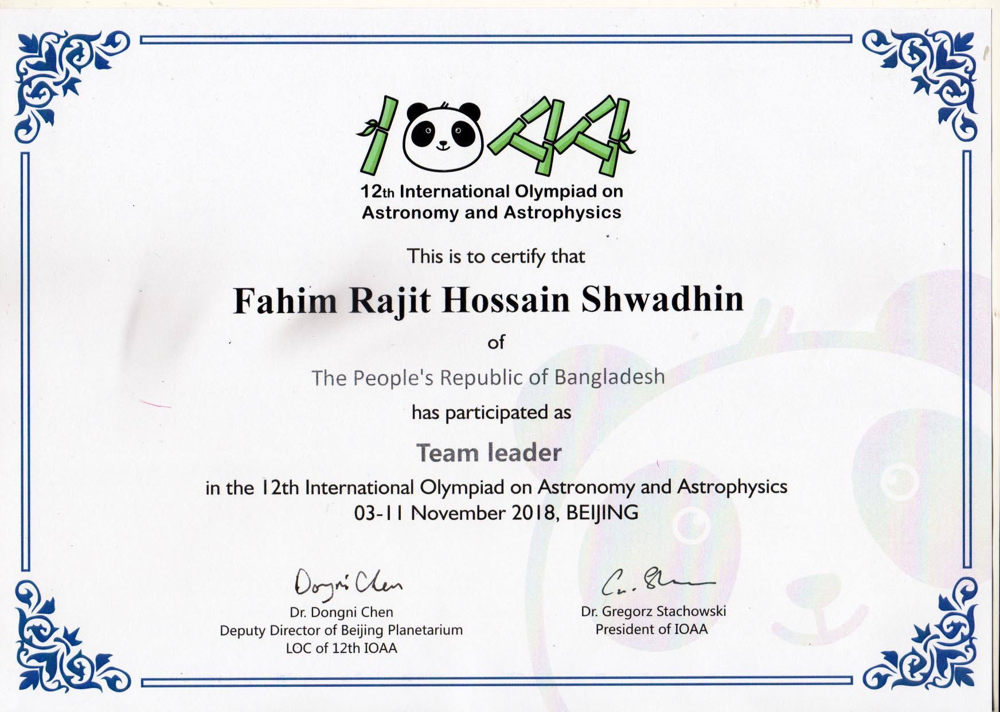
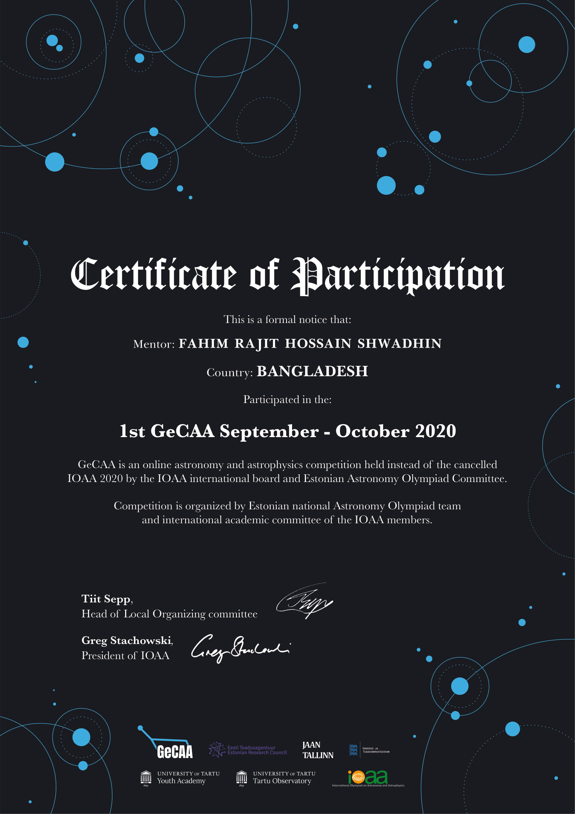
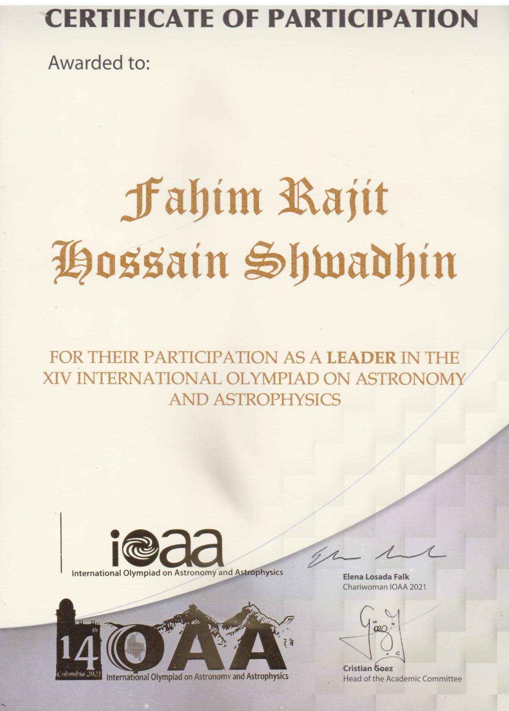

Education
B.Sc. in Electrical and Electronic Engineering, BAUET, 2023.
My path into astronomy has combined self-directed learning, international Olympiads, observational training, research, scientific computing, and years of teaching students.
I completed a B.Sc. in Electrical and Electronic Engineering in 2023, while building my astronomy experience through research projects, international programs, and the Bangladesh Olympiad on Astronomy and Astrophysics.

A compact summary of the experiences that connect the rest of this portfolio.
B.Sc. in Electrical and Electronic Engineering, BAUET, 2023.
Exoplanet atmospheres, strong gravitational lensing, dark matter, and astronomy education.
International participant, trainer, academic coordinator, and Bangladesh Team Leader since 2018.
Astronomy books, Olympiad notes, observational resources, and open learning tools.
I began learning astronomy largely through freely available books, lectures, problem sets, and online resources. Science competitions gave that self-study a structure. I represented Bangladesh at IOAA 2016 and later at IESO 2017, where I received a Bronze medal as a participant.
In 2018 I became involved in building the Bangladesh Olympiad on Astronomy and Astrophysics (BDOAA), serving as an academic coordinator, coach, and Bangladesh Team Leader. Teaching Olympiad students became an important part of how I learned to explain technical astronomy clearly and systematically.
My research experience developed alongside that educational work. LEAPS 2020 introduced me to high-resolution exoplanet spectroscopy. I later worked on strong gravitational lensing and the internal structure of massive elliptical galaxies, and that project culminated in an Astronomy & Astrophysics publication in 2025. In 2024 I joined CASSUM as a Research Fellow, working on exoplanet atmospheric modeling and synthetic observations. My current work also includes astronomy-education research and Olympiad knowledge graphs.
These areas may look different, but they are connected by the same interests: observation, quantitative reasoning, scientific modeling, and making astronomy easier to learn without removing the mathematics and physics.
A short timeline; research details and professional travel are documented on their dedicated pages.
Represented Bangladesh at the 10th International Olympiad on Astronomy and Astrophysics in Bhubaneswar, India.
Represented Bangladesh at IESO 2017 in France and received a Bronze medal as a participant.
Began serving as an academic coordinator, trainer, and Bangladesh Team Leader for international astronomy Olympiads.
Selected for the Leiden/ESA Astrophysics Program for Summer Students and worked on high-resolution exoplanet spectroscopy remotely during COVID-19.
Completed undergraduate studies in Electrical and Electronic Engineering at Bangladesh Army University of Engineering & Technology.
Worked in Gothenburg on exoplanet atmosphere modeling and synthetic observations.
The BD Lensing project led to an A&A publication, and I was selected for the 47th International School for Young Astronomers.
Employed with the AI lab Mercor, San Francisco, USA, working on astronomy-focused LLM benchmarking and prompt engineering. I have created well over 100+ astronomy benchmarking prompts so far.
Continuing research, Olympiad leadership, astronomy-education work, and development of open learning resources.
A concise selection; Olympiad team results are listed separately on the Astronomy Olympiads page.
Selected participant, November–December 2025. Invitation letter ↗
Bronze medal as a Bangladesh participant at the International Earth Science Olympiad in France. Certificate ↗
National Champion in Bangladesh.
Bangladesh winner in the International Astronomical Union telescope program. Record ↗
Overall Band 7 in 2018 and again in 2024.
Received scholarships at junior, secondary, and higher-secondary levels in Bangladesh.
A visual archive of programs, competitions, and astronomy activities.






Coverage related to Astronomy Olympiad work and science outreach.
You can reach me by email or through the professional and social links in the header.